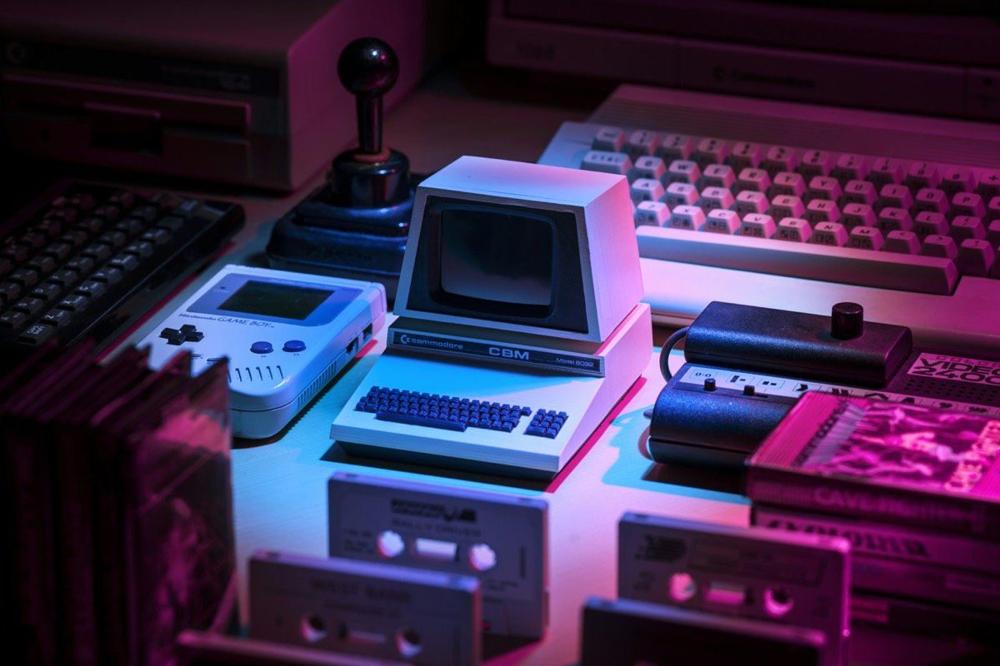
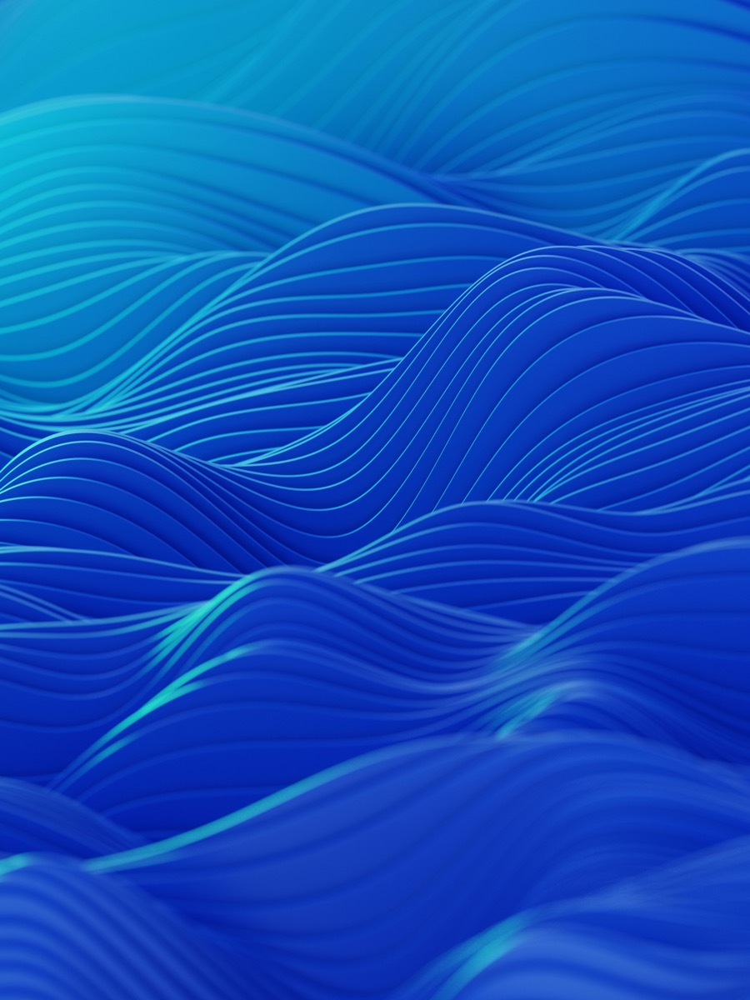

Give an idea a shape.
Explore workflows for developing a written brief into a visual direction.
Explore workflows ↘
Rotate the colour prism
Drag the model to inspect its form, or use the rotation buttons.
Start a creative workflow
Brief builder
Write the intended use first. A mobile cover and a wide campaign banner need very different framing even when they share a subject.
Explore brief builder ↗Visual direction
Collect references for individual qualities such as light or composition. Annotate what you want to borrow from each one.
Explore visual direction ↗Review board
Compare directions against the brief in a single view. Keep a short note on the decision so the next revision starts from an agreed point.
Explore review board ↗Workflows
View all ↗Brief builder
Define audience, intent and constraints before writing a creative prompt.
Read more ↗
Visual direction
Compare contrasting references and refine the visual vocabulary.
Read more ↗Review board
Group proposed directions by objective and record feedback for the next pass.
Read more ↗From a prompt to a direction
A useful creative brief names a reader, a message and a constraint. Changing all three at once makes it hard to tell why an image works. Develop one variable at a time.
Write the intended use first. A mobile cover and a wide campaign banner need very different framing even when they share a subject.
About Prism Lab →From idea to image
Brief builder
Write the intended use first. A mobile cover and a wide campaign banner need very different framing even when they share a subject.
Explore brief builder →Visual direction
Collect references for individual qualities such as light or composition. Annotate what you want to borrow from each one.
Explore visual direction →Review board
Compare directions against the brief in a single view. Keep a short note on the decision so the next revision starts from an agreed point.
Explore review board →Prompt workbook
Choose a focus and download your notes as a text file.